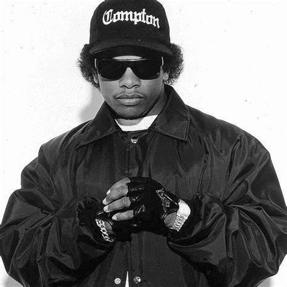

Eazy-E
Eric Lynn Wright, mejor conocido como Eazy-E fue un rapero, productor y mánager. Nació el 7 de septiembre de 1963 en Compton, California, Estados Unidos. Fallece el 26 de marzo de 1995.
Eric viajó hasta Woodland Hills, California, donde formó una banda y empezó a vender drogas como crack, heroína, marihuana y cocaína. Para que posteriormente, con el dinero que recolectara en las ventas fundara su propia compañía discográfica, a la que nombró “Ruthless Records”, junto a su socio y amigo Jerry Heller. Tiempo después, se unieron figuras como MC Ren, Arabian Prince, Ice Cube, DJ Yella y Dr. Dre, quienes formaron el grupo de gangsta rap N.W.A.
Para principios 1995, Eazy se dirigió a un hospital por una molestia, a lo que se sospechaba de una bronquitis. Los médicos evaluaron su estado y posteriormente le diagnosticaron sida y es entonces cuando el 26 de marzo fallece a causa de dicha enfermedad.
